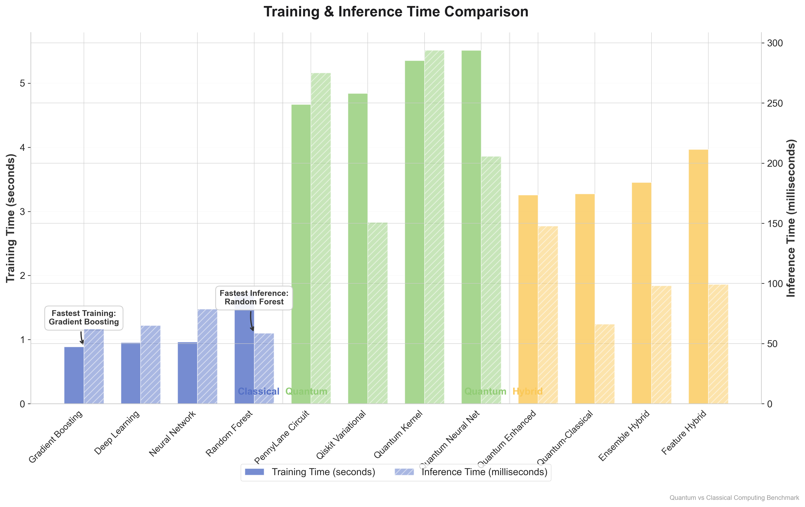
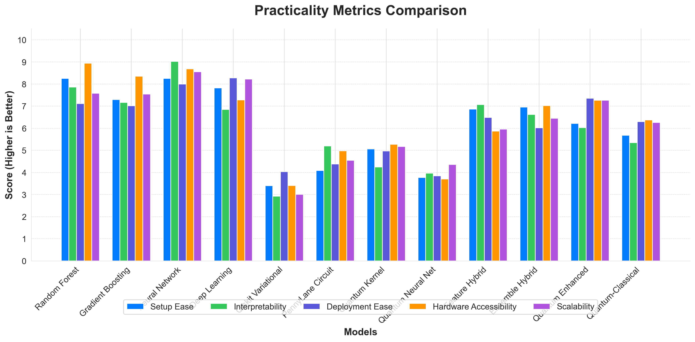

Quantum vs Classical Computing
A comprehensive comparison of classical, quantum, and hybrid computing approaches for machine learning tasks
Model Accuracy Comparison
How well do different computing paradigms perform on prediction tasks?

Training & Inference Time
How fast are different models at training and making predictions?
Computing Paradigms Overview
A comparison of the three main computing approaches and their characteristics.
Classical Computing
Traditional algorithms running on conventional hardware.
Good balance of accuracy and performance with accessible hardware requirements.
Quantum Computing
Algorithms that leverage quantum mechanical principles.
Promising approach but currently faces challenges with hardware access and complexity.
Hybrid Computing
Combines classical and quantum approaches for best results.
Often achieves the best accuracy by leveraging strengths of both approaches.
Resource Usage
How much memory and CPU do different models require?
Multi-Dimensional Analysis
A radar chart showing performance across multiple dimensions simultaneously.

Model Comparison
A detailed comparison of all models across key performance metrics.
Classical Models
- Random Forest: Fast training, good accuracy, easy to interpret
- Gradient Boosting: Higher accuracy, slower training than Random Forest
- Neural Network: Versatile but requires more data and tuning
- Deep Learning: Highest potential accuracy but most resource intensive
Quantum Models
- Variational Classifier: Quantum circuit with trainable parameters
- Quantum Kernel: Uses quantum feature maps for classification
- Quantum Neural Net: Quantum equivalent of neural networks
- Quantum Circuit: Custom quantum circuits for specific problems
Hybrid Models
- Feature Hybrid: Split features between quantum and classical processing
- Ensemble Hybrid: Combine predictions from quantum and classical models
- Quantum Enhanced: Use quantum computing to enhance classical models
- Quantum-Classical: Quantum feature extraction with classical processing
Accuracy Comparison
How well do different computing paradigms perform on prediction tasks?
Training & Inference Time
How fast are different models at training and making predictions?
Resource Usage
How much memory and CPU do different models require?
Practicality Metrics
How practical are different models to implement, deploy, and scale?
Multi-Dimensional Analysis
A radar chart showing performance across multiple dimensions simultaneously.
Key Findings
The most important insights from our comprehensive benchmark.
Summary of Results
Our benchmark reveals distinct trade-offs between classical, quantum, and hybrid computing approaches for machine learning tasks:
- Classical Models provide a solid balance of accuracy, speed, and practicality. They're well-suited for most production environments today, with mature tooling and straightforward deployment paths.
- Quantum Models demonstrate promising results but currently face practical limitations. Higher resource requirements and longer training times make them more suitable for specialized research applications rather than general production use.
- Hybrid Models achieve the best accuracy by combining strengths from both paradigms. They represent a practical middle ground, offering improved accuracy over classical models without the full implementation complexity of pure quantum approaches.
Recommendations
Based on our findings, we recommend:
- For immediate production needs, classical models remain the most practical choice
- For research and exploration, quantum models offer unique capabilities worth investigating
- For cutting-edge applications seeking maximum accuracy, hybrid approaches offer the best overall balance
As quantum hardware and frameworks continue to mature, we expect to see improved practicality metrics for quantum and hybrid approaches in the future.
Future Prospects
How the landscape might evolve in the coming years.
The Road Ahead
Several key developments are likely to influence the quantum vs classical computing landscape:
- Quantum Hardware Advancements: As quantum computers become more powerful and stable, the performance gap with classical approaches will likely narrow
- Specialized Algorithms: New algorithms specifically designed for quantum and hybrid approaches may unlock currently inaccessible performance benefits
- Accessibility Improvements: Better development tools and cloud-based quantum computing resources will make these technologies more accessible
- Problem-Specific Advantages: Certain problem domains (optimization, simulation, cryptography) may see quantum advantages emerge before others
The most promising path forward appears to be through hybrid approaches that can leverage the best of both worlds while quantum technology continues to mature.